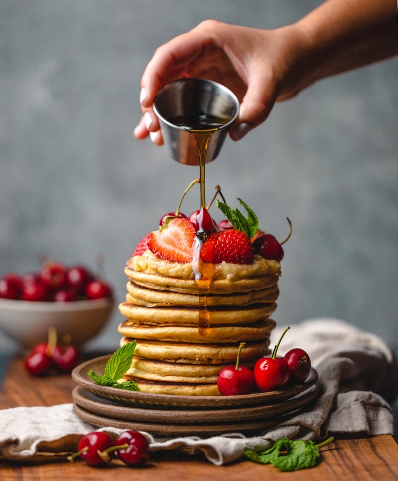

Lana Gasparyan is creator and author graduated from Culinary Institute of America in Hyde Park in 2010. Total experience 10 year. Lana is originally from Georgia .
Follow us on Instagram , Facebook and Twitter.
Author: Lana Gasparyan
A little storry about my cooking.
Hello my dear friend!!!
My name is Lana , and I love cooking. Each time I feel sad or tired I cook something nice. It's really relaxing and therapeutical . I cook mixed food .Combination of Armenian, Georgian
, Ucranian, Italian and Indian cuisine take place in my kitchen. I love to improvise and make things my way.
Food is something everyone enjoys and loves . Cooking can also be a great way to spend time with friends and family.
Try to enjoy cooking and you will see the differance . Food itself is more tasty when it's cooked with love.
Thank your for being here with me. Will do my best to share all my favorite recipes with you .
Ciao ...
Author: Lana Gasparyan
